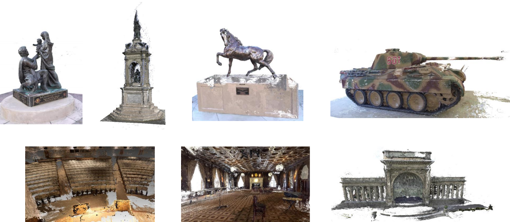

Results

Comparison between our method and SOTA learning-based multi-view stereo methods on the DTU dataset. We report the accuracy in terms of the Overall Error with respect to running time (Left) and GPU memory consumption (Right). The image resolution is $1600\times 1184$. The `Iters' represent the numbers of iterations at each stage. 
Point cloud reconstruction of Tanks and Temples dataset. Top Row: the reconstruction results on the intermediate set. Bottom Row: the reconstruction results on the advanced set.
Citation
@inproceedings{wang2022efficient,
title={Efficient Multi-View Stereo by Iterative Dynamic Cost Volume},
author={Wang, Shaoqian and Li, Bo and Dai, Yuchao},
booktitle={Proceedings of the IEEE/CVF Conference on Computer Vision and Pattern Recognition},
pages={8655--8664},
year={2022}
}